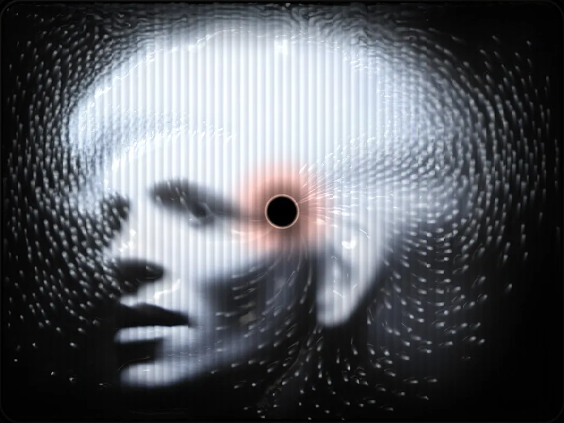
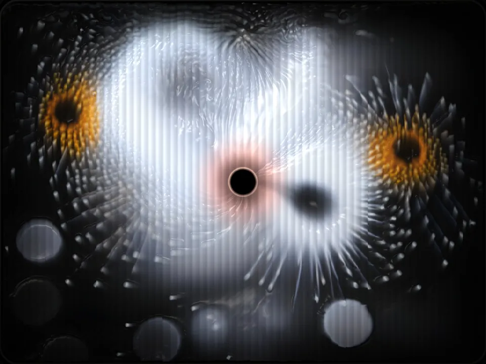
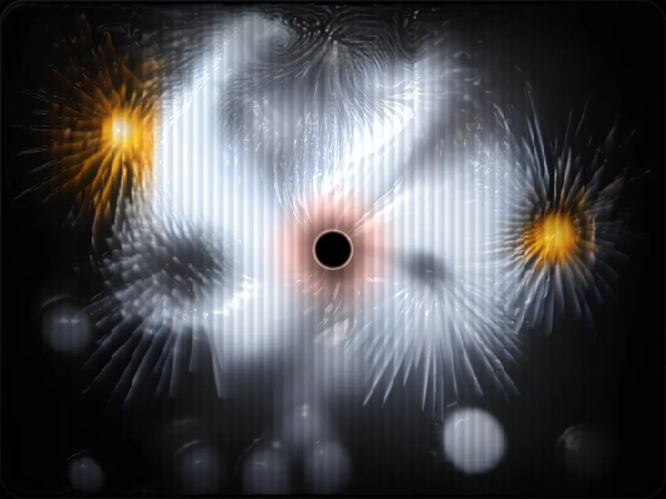
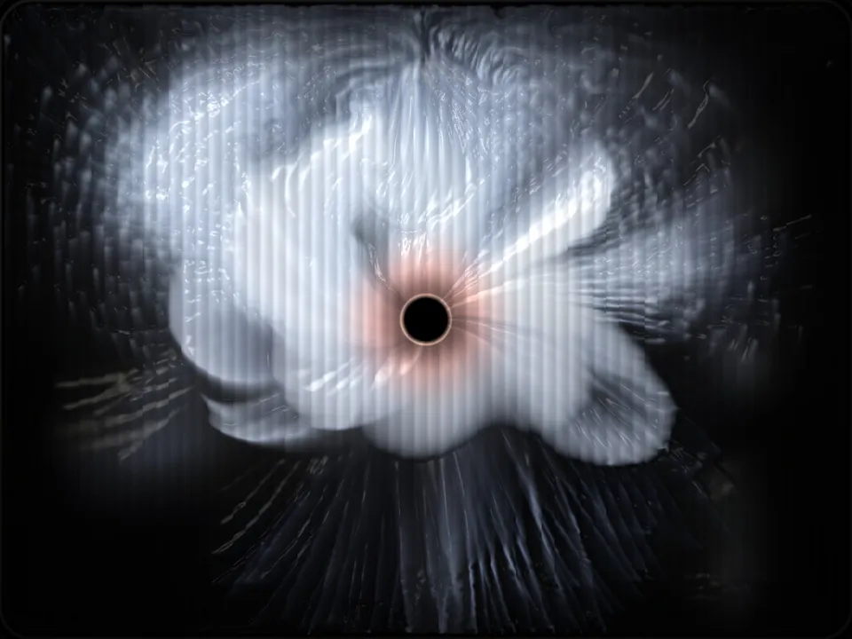
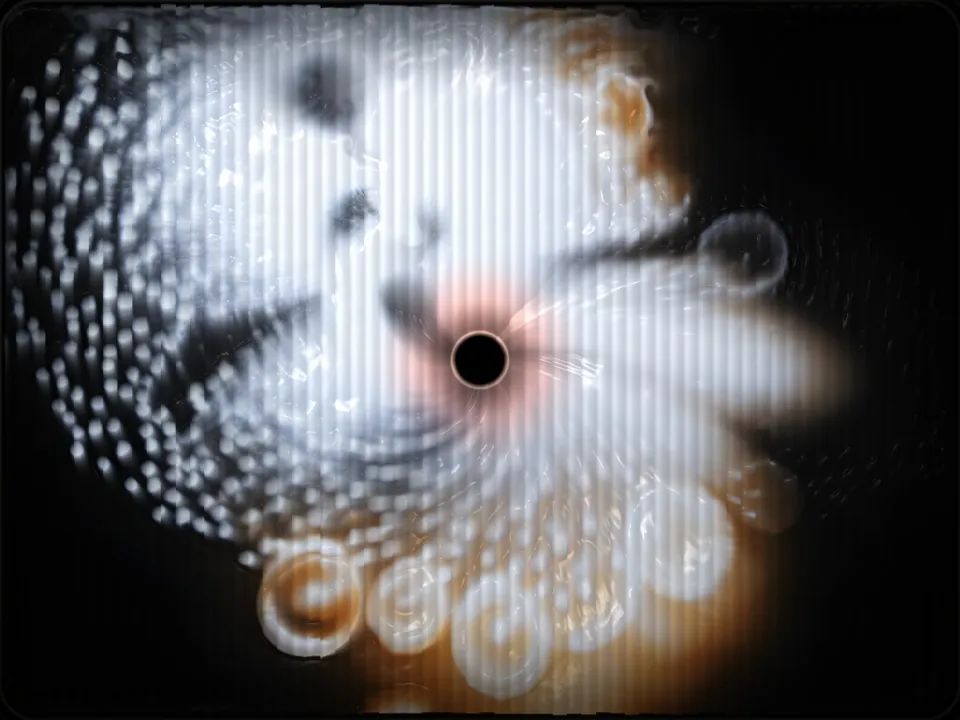
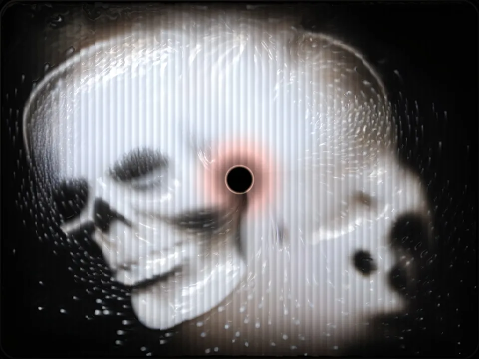
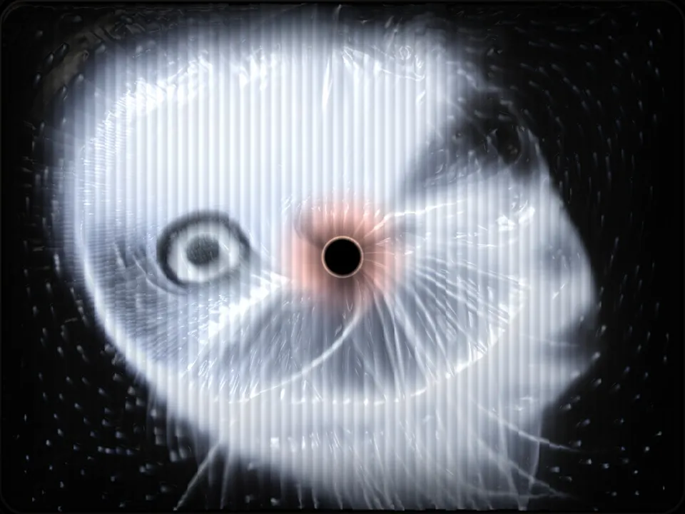

The water, dreaming, on a touch screen filling the bowl. Reach in; it slips away.
30 × 25 × 39½ in · bowl 26 × 21 × 9¾ in


approx. to scale
A big print pulls you across the room: a figure bowed over a sink, bringing up one gold blob. Vomit, or a nugget; you can’t tell. You reach the basin already in her posture. The tap gives no water, nothing to wash in but more image.
Vanitas: four hundred years of skulls, dead flowers and soap bubbles saying you will die. Homo bulla, man is a bubble. Mine are AI bubbles, twice over: the soap bubble the Dutch painted for fragility, and the one many of us fear we are standing inside.
The print is my self-portrait, hung as a mirror: your face lands on mine and wears the dissolve. I am not above the slop. Hold the eye on the glass and a small camera lends your face to the next dream, once; the basin dreams you, then lets you go down the drain. The photo is never kept.
The water is a GPU dreaming, every frame made as you watch, all of it running to the drain. Turn the handle off: no water, no dream. Reach in and it slips through your fingers. I freedive; you cannot hold water. Pilate washed his hands of the truth. This asks the reverse. The veritas is the hand that reaches anyway, and the taste that steers the machine: every dream leans toward eight pictures I chose. In a room of generated everything, that choice is the only ground truth left.
The print rises from the sink on one post: freestanding, no wall.
The screen in the bowl boots straight into the water; a power cut is just the tap turned off. The same water runs on the web as veritas, and a touch in either moves both. A QR code on the sink opens it: sink == sync: one water.

Allegory of Vanity · c.1636

Allegory of the Vanities · c.1640

Vanitas with a Sunflower · 1668

Vanitas Still Life (detail) · 1630

Vanitas Still Life · contemporary

Vanitas Still Life · dated 1650
vanitas [flower, skull, soap bubble] --chaos 100 --ar 4:3
--sref https://s.mj.run/wu5Pv45blp4 --profile f5vl77o
--stylize 1000 --hd --v 8.1 01
01 02
02 03
03 04
04 05
05 06
06 07
07 08↻
08↻








